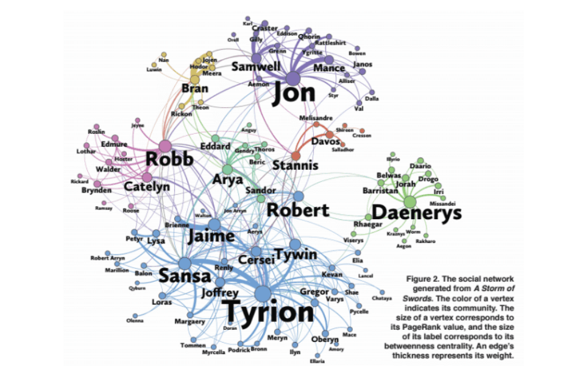
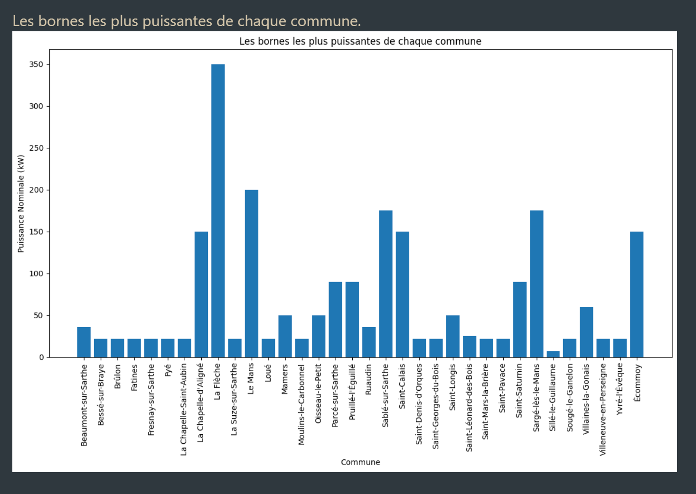
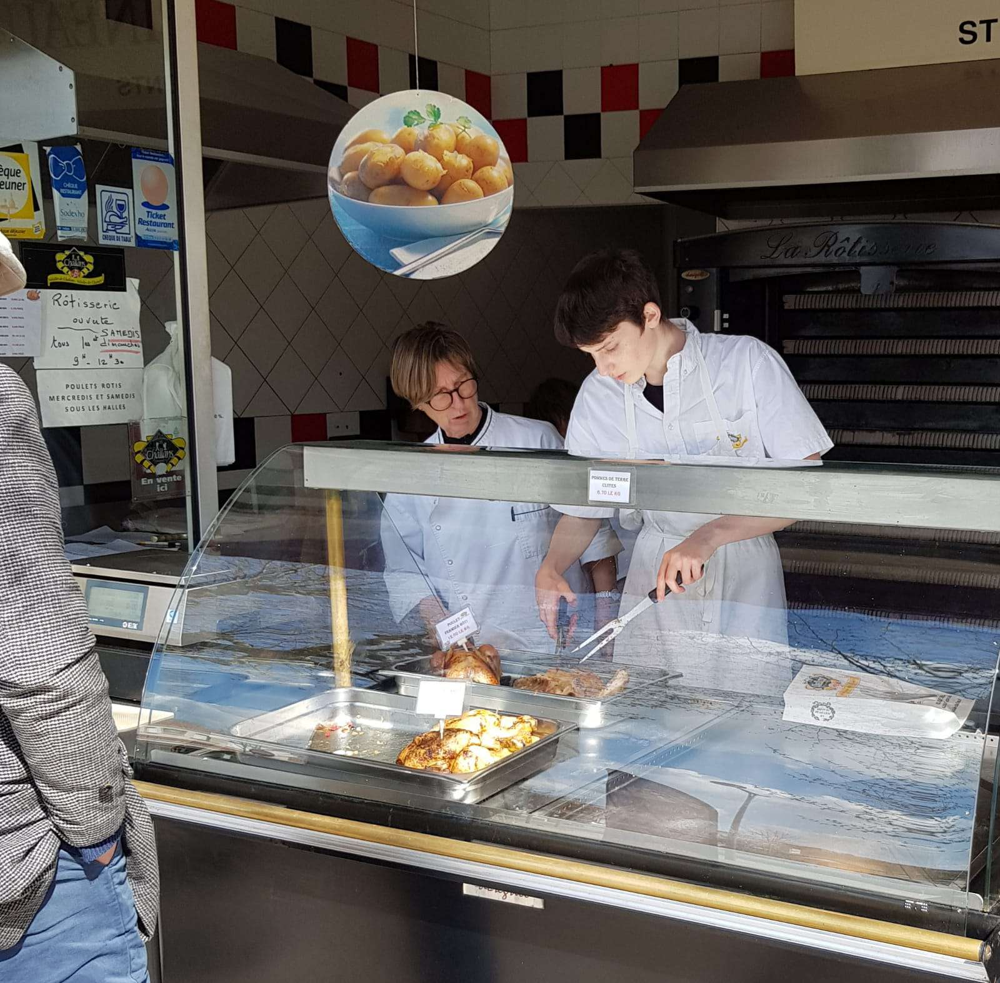

Actuellement en 1ere année de BUT Informatique à l'IUT de Nantes,
je suis un passionné de software et d'hardware qui aime découvrir de nouvelles technologies/langages de programmation pour mes projets personnels et scolaires.
- 💻 Voici différents langages que je maîtrise :
 CSS
CSS
 HTML
HTML
 Java
Java
 Oracle
Oracle
 Python
Python
- 🛠️ Outils et Plateformes
 Git
Git
 GitHub
GitHub
 jetbrains
jetbrains
 VScode
VScode
N'hésitez pas à regarder mon CV si besoin (vous pouvez aussi le télécharger)
Projets Scolaires
Voici une liste des différents projets que j'ai eu l'occasion de développer dans le cadre de ma formation :
- SAE de Graphes :
- SAE de Base de Données :
- Mon Portfolio :
L'objectif de cette SAE sur les graphes était d'implémenter des algorithmes de calcul de plus courts chemins et d'utiliser ceux-ci pour faire une analyse de différents réseaux.

A l'arrivée, cette SAE nous permettait de convertir un fichier DOT en une matrice pouvant être étudiée sous forme de métriques. Ces métriques peuvent par exemple donner les degrés des sommets, ce qui peut être interprété comme étant les relations qu'un personnage a avec d'autres du même film.
Cette SAE avait pour but de nous faire importer une base de données existante afin de la compléter et d'en tirer une nouvelle base de données plus claire et complète.
Il fallait donc créer différents schémas pour planifier la tâche en amont, créer les tables et créer les contraintes.
Nous avons aussi eu l'occasion de générer différents grâce en exportant le résultat de certaines requêtes.

Finalement, nous avons eu une soutenance orale à faire afin de présenter brièvement notre travail que l'on a effectué tout au long de cette SAE.
Et oui, ce portfolio est aussi dans le cadre de mes études ! Cependant, il me servira très sûrement en tant que projet personnel afin de l'améliorer au fur et à mesure.
Expériences Professionnelles
Assistant Vendeur en Rotisserie (AVRIL-JUIN WEEKEND; JUILLET-AOUT 6J/7 2022)

Ce premier travail m'a tout particulièrement permis de travailler en équipe et de découvrir le monde de l'entreprise. Cela m'a aussi permis de gagner en rigueur et en discipline.
Projets Personnels
Modpack complet en C++ sur le jeu de type roguelite The Binding of Isaac
(En cours de développement - 2025)